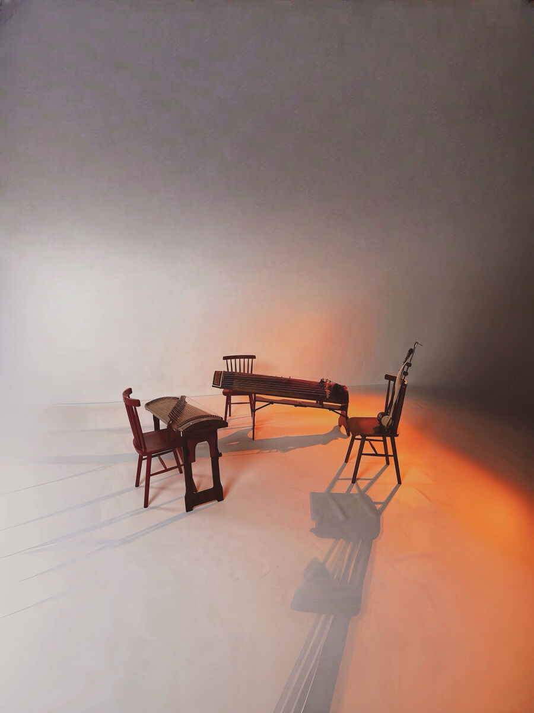
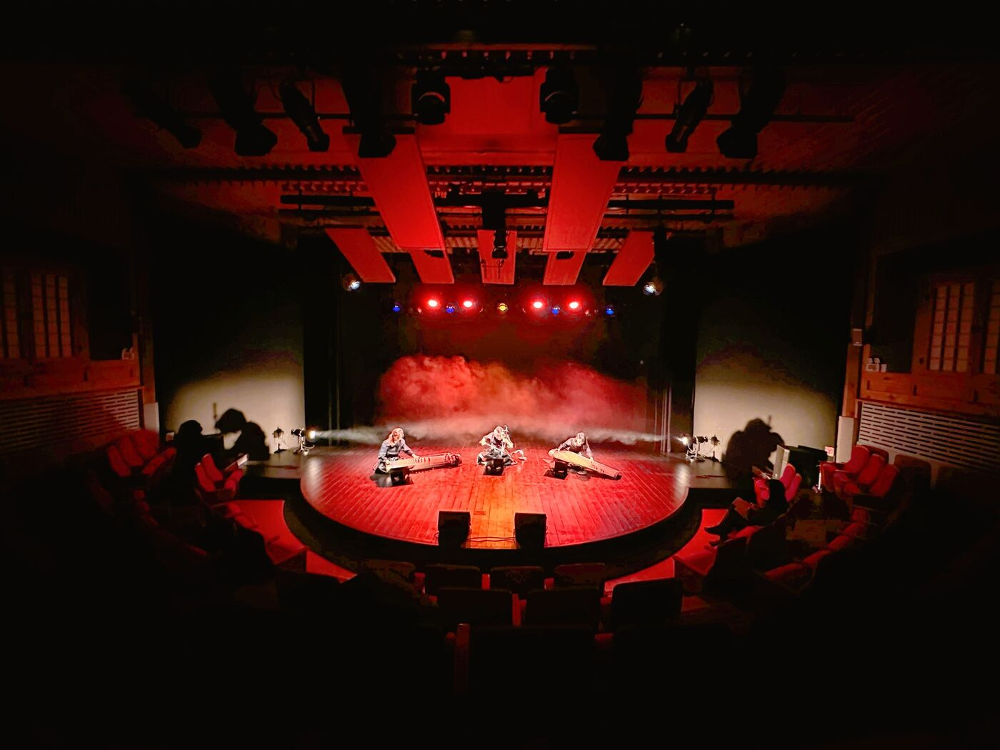
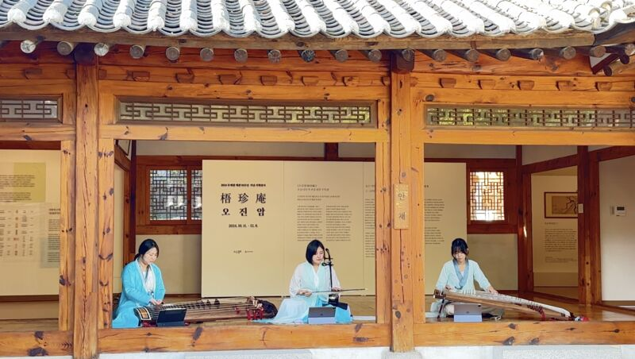
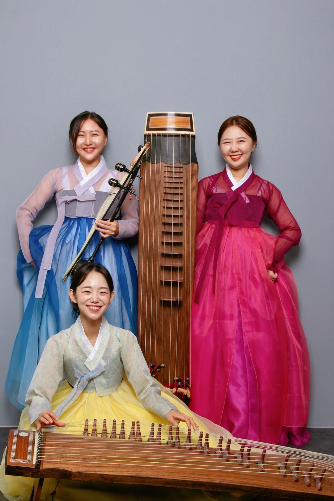
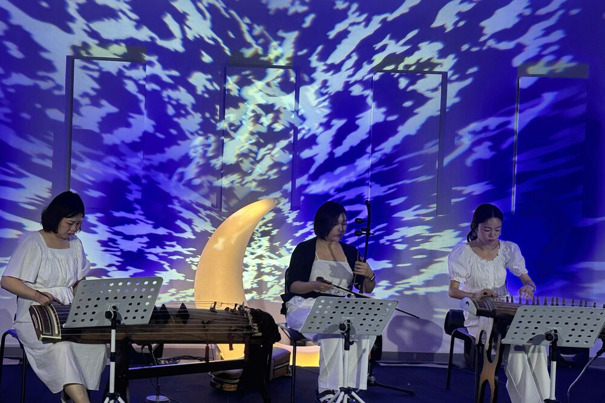
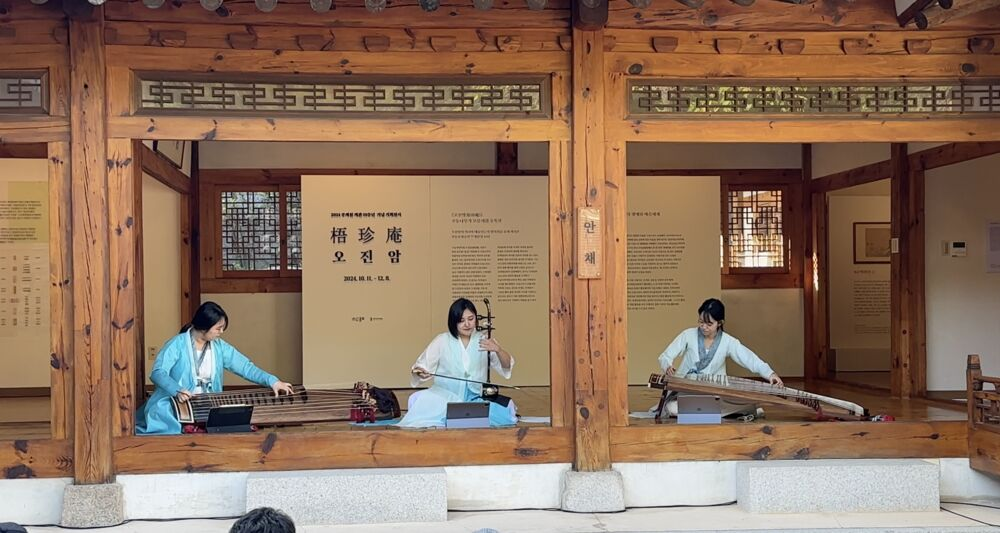
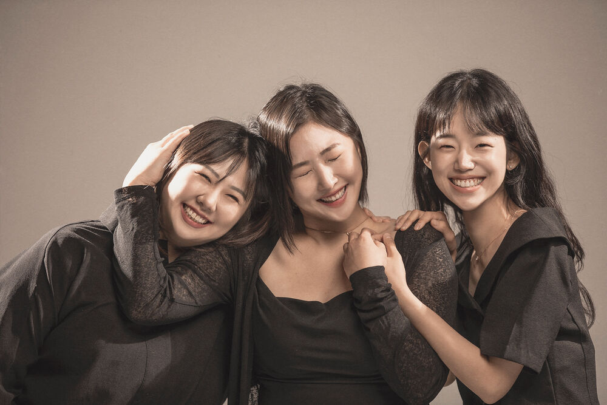
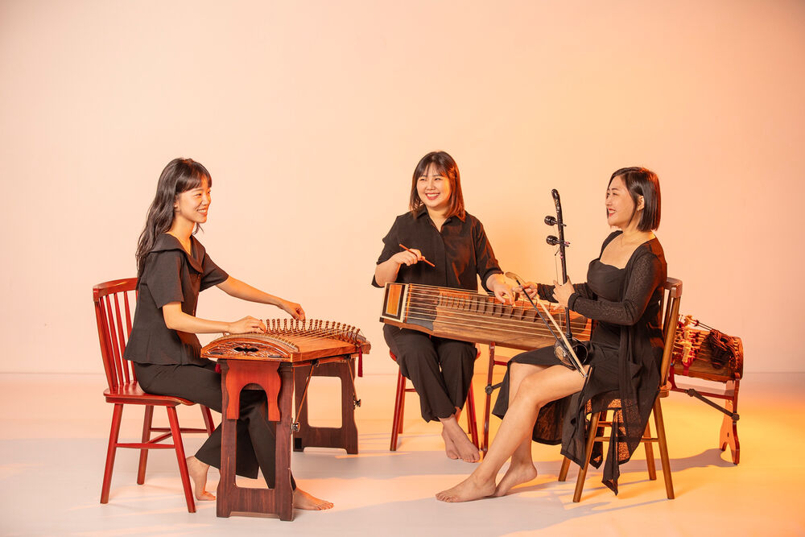
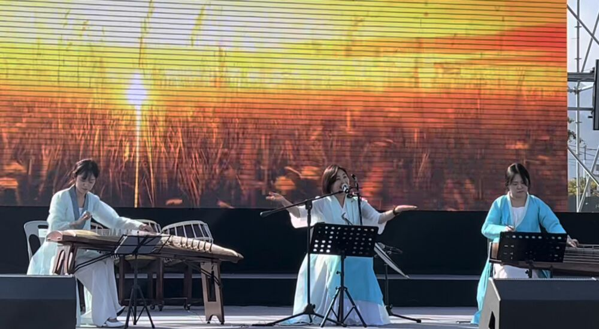
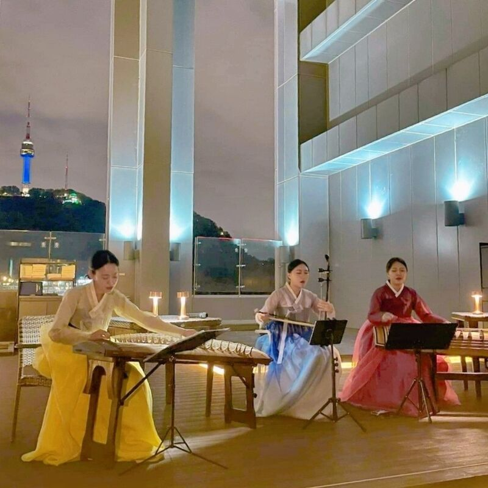

더불어, 견주어 — 한국의 24절기,
세 개의 현이 하나의 울림으로

다못은 거문고, 가야금, 해금 3인조로 구성된 국악 현악 앙상블입니다.
'다못'은 '더불어, 견주어'라는 뜻의 순우리말로, 세 명의 연주자가 서로 어우러지고 견주며 만들어가는 음악을 상징합니다.
다못은 사계절 속에서 나누는 세 여자친구의 이야기를 음악으로 전합니다. 한국의 24절기 속 문화와 풍경이 세 개의 현악기가 만들어내는 하나의 울림을 통해 전달됩니다.
입춘의 새싹이 돋아나는 순간부터 대한의 깊은 겨울까지, 절기마다의 고유한 멋과 감동을 세 현악기의 울림으로 표현합니다.
인간과 자연이 만들어낸 24절기의 이야기가 세 연주자의 소리와 어우러져 한 해의 풍경을 생생하게 전달합니다. 즉흥연주를 통해 한국의 24절기의 흐름을 담아낸 공연으로, 자연과 인간이 하나 되어 만들어낸 시간의 예술입니다.
변화하는 계절 속에서 우리의 삶을 되새기며, 자연을 담은 현악기의 호흡과 선율이 관객의 마음을 울립니다.

겨울의 끝자락, 봄이 오는 길목에서 꽃이 피는 것을 시샘하는 우수의 정서를 담았습니다. 거문고와 가야금의 조화로운 선율이 황량한 겨울의 끝과 따뜻한 봄의 시작을 그리며, 해금병창의 멜로디가 꽃이 피어나는 순간의 아름다움을 표현합니다.

태양이 가장 높이 떠오르는 하지의 절정을 음악으로 풀어냈습니다. 강렬한 리듬과 밝은 선율이 태양의 에너지를 상징하며 여름의 활기를 전달합니다. 가야금과 거문고의 힘찬 연주에, 뜨거운 태양에 해금의 늘어지는 듯한 표현이 더해져 하지의 계절을 표현해 냅니다.
여름 장마가 시작되는 소서는 비의 장막을 청각화한 곡입니다. 장마의 시작을 알리는 비의 소리를 그려낸 가야금과 거문고의 깊은 음색, 해금병창의 애잔한 멜로디가 어우러져 비 오는 날의 정취를 느끼게 합니다.
처서는 여름의 끝자락과 가을의 시작을 의미하며, 사유의 계절로 불립니다. 가야금의 섬세한 선율과 깊은 음색을 통해 사유의 깊이와 계절의 변화를 표현하며, 여름의 열기에서 가을의 서늘함으로 넘어가는 순간을 경험하게 합니다.
추분은 낮과 밤이 같은 길이가 되는 시기입니다. 낮과 밤이 서로를 추격하는 듯한 긴장감과 균형을 음악적으로 표현했습니다. 거문고와 가야금의 빠른 템포와 해금병창의 역동적인 멜로디가 그 긴장감을 잘 나타냅니다.
동지는 밤이 가장 긴 날로, 깊은 밤의 도깨비 축제를 연상케 하는 곡입니다. 해금병창의 미스터리한 멜로디와 거문고의 낮은 울림이 깊은 밤의 분위기를 조성하며, 가야금의 선율이 축제의 희망찬 분위기를 더합니다. 동짓날 밤 도깨비들이 사람들을 놀래키고 즐기는 모습을 생생하게 표현하며, 전통 속신과 풍습을 음악으로 재현합니다.
대한은 겨울의 절정으로, 혹한의 시기를 음악으로 표현했습니다. 거문고의 리듬과 가야금의 잔잔한 선율로 혹한의 추위를 나타내며, 해금병창의 음색이 그 속에서 피어나는 눈꽃들을 표현합니다. 빙판 위 설산의 고요하면서도 매서운 느낌을 더합니다.






